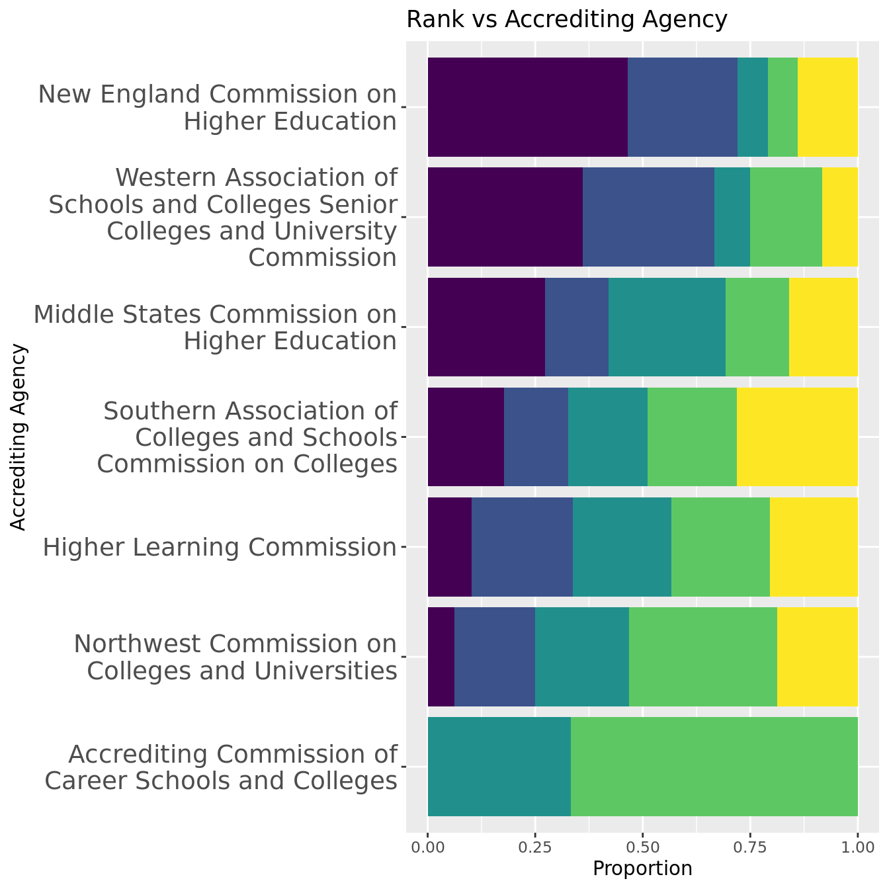
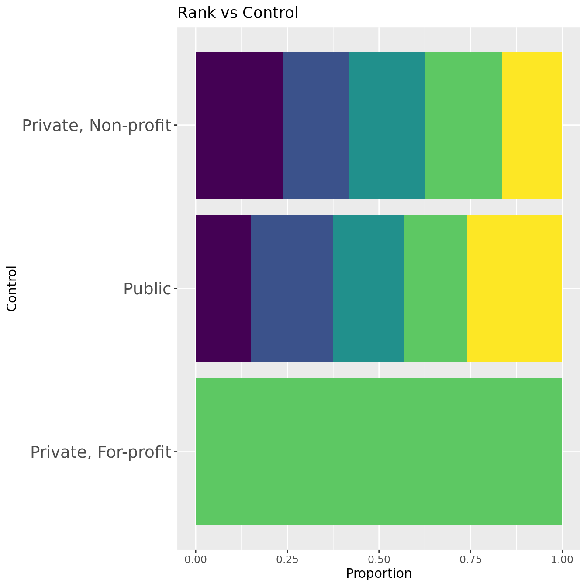

College Ranking Predictions
Report
Introduction
Research Background
Every year, millions of students apply to colleges across the United States, and many of them use college rankings lists from sources such as Niche.com to to help them decide where to apply. In recent years, these lists have been heavily criticized as they encourage universities to prioritize certain metrics and manipulate the system to raise their ranks. It is important for students to know where these rankings come from and what they actually measure. In this project, we will explore how influential different metrics are in determining a college’s ranking. For reference, when we say a “low rank,” we refer to schools with a lower numerical rank, such as #1. When we say a “high rank,” we refer to schools with a high numerical rank, such as #500.
Data
For our analysis, we joined two datasets:
Data Set #1 - Niche: Niche’s “2023 Best Colleges in America” list aggregates data from a variety of sources, including the US Department of Education and reviews from students and alumni, and is updated monthly. The Niche data was scraped by Maia on October 17-19 2022. There are 500 observations, representing the top 500 schools in the United States. Each observation has two variables: college (institution name) and rank.
Data Set #2 - US Department of Education: The second data set comes from the US Department of Education’s College Scorecard, which is an exhaustive summary of characteristics and statistics for all colleges and universities in the United States. The College Scorecard is updated by the Education Department as it collects new data, but most of the data comes from the 2020-2021 school year. Data used in the scorecard comes comes from data reported by the institutions, data on federal financial aid, data from taxes, and data from other federal agencies. There were 2,989 variables in the original data set, many of which we don’t need to answer our question, so we selected 63 variables before importing into R-Studio. We further narrowed to 31 variables we thought could have the most influence on rank. There are 6681 observations, representing all US colleges and universities.
Variable Summary:
college: Institution name (Categorical)rank: Rank of school on Niche list (Quantitative)REGION:US geographic region (C)ACCREDAGENCY: Accreditor for institution (C)CONTROL: Public, Private nonprofit, or Private for-profit (C)CCBASIC: Carnegie Classification (basic) (C)ADM_RATE: Admission rate (Q)UGDS:enrollment of undergraduate certificate/degree-seeking students (Q)UGDS_WHITE,UGDS_BLACK,UGDS_HISP,UGDS_ASIAN,UGDS_AIAN,UGDS_NHPI,UGDS_2MOR, andUGDS_UNKN: enrollment of undergraduate students of each racial/ethnic group (Q)NPT4_PUB,NPT4_PRIVAverage net price for Title IV institutions (public and private) (Q)COSTT4_A,COSTT4_PAverage cost of attendance (academic- and program-year institutions) (Q)AVGFACSAL: Average faculty salary (Q)PCTPELL: Percentage of undergraduates who receive a Pell Grant (Q)C150_4: Completion rate for first-time, full-time students at four-year institutions (Q)AGE_ENTRY: Average age of entry (Q)FEMALE: Share of female students (Q)MARRIED: Share of married students (Q)FIRST_GEN: Share of first-generation students (Q)FAMINC,MD_FAMINC: Average and median family income (Q)ENDOWBEGIN: Value of school’s endowment at the beginning of the fiscal year (Q)SAT_AVG: Average SAT equivalent score of students admitted (Q)ACTCMMID: Midpoint of the ACT cumulative score (Q)
Data Preparation
- To get the data, we scraped from Niche.com and downloaded data from the US Department of Education. The steps were done in
niche-scrape.R University of South Florida-Sarasota-ManateeandUniversity of South Florida-St. Petersburgwere removed because they did not exist in both datasets due to naming discrepancies.
- All of the numerical variables are on different scales, so we created scaled version of the numerical explanatory variables, with mean 0 and standard deviation 1.
Exploratory Data Analysis
Means of Selected Numerical Variables by Rank Group
| Interval | Mean Admission Rate | Mean SAT Average | Mean ACT Median | Mean % White Students | Mean % Asian Students | Mean Cost of Attendance |
|---|---|---|---|---|---|---|
| 1-100 | 0.2767340 | 1422.703 | 32.05495 | 0.4865770 | 0.1500930 | 60691.49 |
| 101-200 | 0.6181010 | 1266.932 | 27.45455 | 0.6271786 | 0.0698429 | 46371.74 |
| 201-300 | 0.6818970 | 1215.864 | 26.02469 | 0.6142470 | 0.0729400 | 43882.71 |
| 301-400 | 0.7157737 | 1160.091 | 24.14474 | 0.5629051 | 0.0548111 | 40799.30 |
| 401-500 | 0.7430135 | 1145.662 | 23.86076 | 0.6184102 | 0.0436867 | 36583.50 |
As the rank group gets higher, the mean admission rate increases and the mean SAT Average, ACT Median, and cost of attendance decreases. 1-100 ranked schools have fewer White students and more Asian students than all other. We observed a relationship between the categorical variables and rank, and included that exploratory analysis in the appendix.
Research Question and Hypothesis
Question: Which characteristics of a university are most associated with rankings on the Niche College Ranking list? Of these characteristics, what is the relationship between high and low rank?
Hypothesis: We hypothesize that SAT/ACT scores, acceptance rate, and family income will have the strongest association with rank because since Niche’s audience is in large part students applying to college, we believe that they prioritize variables important in the college admissions process. Of these variables, we predict that SAT/ACT score and family income will have a strong negative relationship, and acceptance rate will have a strong positive relationship with rank.
Methodology
We split the first part of our analysis into two approaches. In the first we look at the linear relationship between the numerical explanatory variables and college rank using R-squared values. In the second we build a stepwise regression model between the variables and college rank. As the variables in the final model will be most important for determining rank, we will use the model results to corroborate our results from the first approach. As we cannot find an R-squared value or other numerical metric to measure a relationship involving a categorical variable, we will use the stepwise regression model to determine if there is a strong association between those variables and rank. In the second part of our analysis, we will combine the results of the two approaches and characterize the relationship between rank and the variables with the strongest association.
Approach #1: Individual Numerical Variable Analysis
First, we will create linear regression models between each individual explanatory variable and rank. Then, we will calculate the R-squared value for each respective model, rank the values from highest to lowest, and select the variables with the highest R-squared values.
Approach #2: Stepwise Regression Modeling
A stepwise regression model can manage large amounts of potential predictor variables and fine-tune the model to choose the best predictor variables from the available options. In our case, we have more than 25 variables to be examined and thus it is crucial to have a automated workflow for model selections.
There are two main steps in this approach. First, we will create a correlation matrix to check correlation coefficients between variables. If two variables have an absolute value of r greater than 0.8, meaning they were too similar in how they factored into rankings, we only picked one of them to put into the model. Then, we will compute the stepwise regression model (both forward and backward selections) using the MASS package and stepAIC() functions for model selections based on Akaike Information Criterion (AIC). AIC is used to compare different possible models and determine which one is the best fit for the data in statistic practice. For the initial setting of the linear regression model, we will import all the valid variables into the model to predict the rank variable.
Final Variable Analysis
We will examine the final variables selected by both approaches by first interpreting the R-squared values and graphs to characterize the linear association for each variable and rank. Then, we will calculate the linear regression slopes between each of the explanatory variables (scaled and non-scaled) and college rank. Then, we will use the scaled slopes to determine which explanatory variable has the greatest influence on college on a school having a higher rank. We will interpret the relationships using the non-scaled slopes.
Results
Approach #1: Individual Numerical Variable Analysis
The table below gives the highest R-squared values for relationships between each individual explanatory variable in our data set and colleges rank. The full list of values is in the appendix.
| variable | r_squared |
|---|---|
| SAT_AVG | 0.6291468 |
| ACTCMMID | 0.6062324 |
| C150_4 | 0.5137627 |
| AVGFACSAL | 0.4692148 |
| ADM_RATE | 0.4048157 |
| PCTPELL | 0.2476545 |
COSTT4_P (Average cost of attendance for program-year institutions) has been removed because there are only two observations.
Average SAT (SAT_AVG), median ACT (ACTCMMID), graduation rate (C150_4), average faculty salary (AVGFACSAL), and admission rate (ADM_RATE), are the five variables with the strongest correlation to rank, based on their R-Squared values Therefore, they are the variables we will be examining later in our analysis. We chose five as a cutoff because there is a substantial difference between the R-squared value of these five and the next variable (PCTPELL).
Approach #2: Stepwise Regression Model
Remove Highly Correlated Variables
| Variable Pairs with r > 0.8 | Correlation Coefficients |
|---|---|
| C150_4, SAT_AVG | 0.8389 |
| C150_4, ACTCMMID | 0.8494 |
| AGE_ENTRY, MARRIED | 0.9059 |
| FAMINC, MD_FAMINC | 0.9538 |
| SAT_AVG, ACTCMMID | 0.9756 |
This table displays high correlated variables. We will drop the variables C150_4, MD_FAMINC, ACTCMMID, MARRIED and preserve SAT_AVG and FAMINC to represent all other variables.
Compute Stepwise Regression

The plot above displays the decreasing AIC value as variables get dropped and added. Each point represents a new iteration of the model after a variable is taken out (-) or added (+). The final iteration is the best model because its AIC value is the lowest.
Final Model
rank ~ REGION + CONTROL + CCBASIC + ACCREDAGENCY + ADM_RATE +
UGDS + UGDS_ASIAN + UGDS_2MOR + UGDS_UNKN + COSTT4_A + AVGFACSAL +
AGE_ENTRY + SAT_AVG + FIRST_GEN + UGDS_HISPOur final model has an R-squared coefficient of 0.7740974 which means it accounts for a significant amount of the variation in rank.
Final Variable Analysis
Categorical Variable Analysis
All four categorical variables appeared in the final model, so we can assume that they have a significant association with rank. (Note that for these graphs we dropped NAs and removed levels that only had one observation.)



The Geographic Region graph shows that New England has the highest proportion of top-100 schools, while the Plains has the lowest. Apart from the New England and NA bars, the differences in proportions of rank groups do not vary dramatically between bars. It is possible that the strength of the correlation between rank and region is driven in large part by the association New England has with schools with the lowest 100 ranks. Additionally, as accreditation agency is often based on location, it reflects results similar to the region graph. There are only 4 Private, For-profit schools in the top 500, and all of them are ranked between 301 and 400. The proportions of ranks between Private, Non-profit and Public are similar, although the first appears to have a larger proportion of 1-100 schools, and the latter a higher proportion of 401-500 schools. There appears to be the greatest differences between bars of proportions of rank groups in the Carnegie Classification group, suggesting that this has the strongest association with rank. The lower the rank, the higher proportion of schools in Doctoral Universities: Very High Research Activity and Baccalaureate Colleges: Arts & Sciences Focus. However, the opposite appears to be true for all other classifications with 3 or more rank categories.
Numerical Variable Analysis
All of the variables with the top 5 R-squared values appeared in the final stepwise regression model except for ACTCMMID (median ACT score) and C150_4 (graduation rate). These were not used in the model because both of them had a high correlation with SAT_AVG (average SAT). Because SAT_AVG ended up in the final model, we can reasonably assume that they also have a strong association with rank based on the model’s selection process. Therefore, we conclude that SAT_AVG, ACTCMMID, C150_4, AVGFACSAL, and ADM_RATE have the strongest association with rank, and we will characterize the relationship below.

| variable | R-Squared | Scaled Slope | Non-scaled Slope |
|---|---|---|---|
| Avg. SAT | 0.6291468 | -115.00 | -0.9277 |
| Med. ACT | 0.6062324 | -112.90 | -30.0400 |
| Graduation Rate | 0.5137627 | -103.50 | -735.2000 |
| Avg. Faculty Salary | 0.4692148 | -98.89 | -0.0347 |
| Admission Rate | 0.4048157 | 91.74 | 387.0200 |
| % Students with Pell Grants | 0.2476545 | 71.75 | 644.7600 |
63% of the variation in college rank can be explained by average SAT score. This same interpretation can be used for all of the variables. Looking further at the relationships, there is a negative relationship between SAT/ACT/Graduation Rate/Faculty Salary and rank. This indicates that as the variables increase, the rank of the school decreases. There is a positive relationship between admission rate and rank, indicating that as this variable increases, the rank of a school increases.
The non-scaled slope shows that on average, we expect a 1-point increase in median ACT score to drop the rank of a school by 30 places. Since admission rate is scaled from 0-1, we need to divide the slope by 100 to interpret it. It indicates that a 1-point drop in admission rate will, on average, result in an estimated drop in rank of the school by 3.87 places. The other variables can be interpreted in the same manner. Scaled slopes allow us to compare them and tell the change in which numerical variable has the greatest impact on a school’s rank. An interesting trend is that among the five most associated variables, the higher the R-squared the higher absolute value of scaled-slope, indicating that variables that have the strongest association to rank also have the greatest influence on decreasing rank. This is logical because Niche likely tie their rankings to variables with the greatest differentiation between higher and lower ranks. This is also concerning because if schools know which variables are most associated to rank and which ones have the greatest impact on decreasing it, it is fairly easy for them to know which variables to change if they wanted to manipulate the rankings.
Discussion
Based on our analysis and approaches, SAT_AVG, ACTCMMID, C150_4, AVGFACSAL, and ADM_RATE are the numerical explanatory variables most associated with college ranking, which partially confirm our initial hypothesis. SAT/ACT/Admission Rate were among the most correlated variables, but family income was not in the top five, possibly because financial aid allows students from various financial backgrounds to attend universities. These relationships indicate certain priorities in college rankings. The existence of the SAT, ACT, and admission rate variables in the top five highlight how rankings prioritize selectivity in college admissions. This makes us wonder if colleges focus on improving admissions selectivity over their quality of education and student outcomes. The inclusion of graduation rate and faculty salary do tell slightly different stories. While graduation rate indicates a focus on the ability of a university to meet the needs of its students, faculty salary may indicate the quality of the faculty both in teaching and research.
The stepwise regression model indicated that the categorical variables REGION, ACCREDAGENCY, CONTROL, and CCBASIC were also important to calculating rank. Unlike the numerical variables, it is interesting to note that these variables cannot change easily from year-to-year, so colleges cannot use them to manipulate their rankings. Additionally, there are some variables that appear in the final model that have a lower individual R-squared value than some that were taken out of the model. We believe that this is because AIC examines the collective predictive power of the variables rather than the individual predictive ability.
The limitations of our analysis are as follows: We left the categorical variables out of the first approach because we do not know a way to numerically analyze them, and in doing so, we could not subject these variables to the same two-step confirmation process that we did for the numerical values. Furthermore, we assumed that all variables had a linear relationship with ranks so we could use linear regression modeling to analyze them. Additionally, our linear models assume that rank is continuous and goes on forever. We recognize that this is not the case, but since the rank values have meaning and we have not learned how to properly work with ranked data in this class, we decided that a linear regression model was our best approach. All of these issues could be resolved by learning and implementing more appropriate statistical methods. Finally, we believe that future avenues for this project could include analyzing and comparing more ranking systems, such as those created by US News and Forbes. It would be useful if students could understand what each system values and use the one most in line with their priorities. Additionally, we would like to look at over 1000 colleges to see if our results stay consistent between colleges throughout the country, and perhaps even throughout the world.
Appendix
Exploratory Analysis: Means of Rank by Categorical Variables
Below, we group the schools by the different categorical variables in our analysis and then take the mean rank for each of those groups. For Carnegie classification, any classification with only one school was removed from the analysis.
We observe that private non-profit colleges have a higher mean rank than public colleges or private for-profit colleges.
As far as region, schools from New England have the highest mean rank, while schools from the Plains have the lowest mean rank.
Looking at the Carnegie Classification, Doctoral Universities: Very High Research Activity have the highest mean rank, followed by Special Focus Four-Year: Engineering Schools. Master’s Colleges and Universities: Medium Programs have the lowest mean rank.
Full R-square Value List
Here is the full list of R-squared values from the linear regression models between individual numerical explanatory variables and college rank.
| variable | r_squared |
|---|---|
| SAT_AVG | 0.6291468 |
| ACTCMMID | 0.6062324 |
| C150_4 | 0.5137627 |
| AVGFACSAL | 0.4692148 |
| ADM_RATE | 0.4048157 |
| PCTPELL | 0.2476545 |
| UGDS_NRA | 0.2040361 |
| FIRST_GEN | 0.1963961 |
| UGDS_ASIAN | 0.1946322 |
| ENDOWBEGIN | 0.1643675 |
| COSTT4_A | 0.1577993 |
| FAMINC | 0.1525416 |
| AGE_ENTRY | 0.1462016 |
| MARRIED | 0.1072270 |
| FEMALE | 0.0752810 |
| MD_FAMINC | 0.0661957 |
| NPT4_PUB | 0.0568142 |
| UGDS | 0.0548673 |
| UGDS_2MOR | 0.0476589 |
| UGDS_BLACK | 0.0463458 |
| NPT4_PRIV | 0.0419051 |
| UGDS_WHITE | 0.0304200 |
| UGDS_NHPI | 0.0222752 |
| UGDS_UNKN | 0.0126394 |
| UGDS_AIAN | 0.0089268 |
| UGDS_HISP | 0.0040103 |
References
Learned how to do for loops from TA Eli Gnesin
We used the
scale()function found at https://www.statology.org/standardize-data-in-r/https://www.niche.com/colleges/search/best-colleges/
https://collegescorecard.ed.gov/data/
https://www.youtube.com/watch?v=ejR8LnQziPY
https://stackoverflow.com/questions/57248708/stepwise-model-selection-in-an-r-tidyverse-workflow
https://stackoverflow.com/questions/53135404/filter-correlation-matrix-r
https://stackoverflow.com/questions/68093071/how-to-highlight-high-correlations-in-ggpairs-correlation-matrix
http://www.sthda.com/english/wiki/visualize-correlation-matrix-using-correlogram
https://www.tutorialspoint.com/how-to-deal-with-missing-values-to-calculate-correlation-matrix-in-r
https://www.displayr.com/how-to-create-a-correlation-matrix-in-r/
https://stats.stackexchange.com/questions/550537/how-to-get-r-squared-after-doing-stepwise-model-selection-in-regression-in-r
http://www.sthda.com/english/articles/37-model-selection-essentials-in-r/154-stepwise-regression-essentials-in-r/
https://www.researchgate.net/figure/R-2-and-RMSE-of-forward-stepwise-regression-models-vs-WHO-algorithm_tbl1_354396022
https://www.r-bloggers.com/2016/05/visualizing-bootrapped-stepwise-regression-in-r-using-plotly/
https://www.tutorialspoint.com/how-to-increase-the-x-axis-labels-font-size-using-ggplot2-in-r#:~:text=More%20Detail-,To%20increase%20the%20X%2Daxis%20labels%20font%20size%20using%20ggplot2,the%20scale%20for%20X%2Daxis.